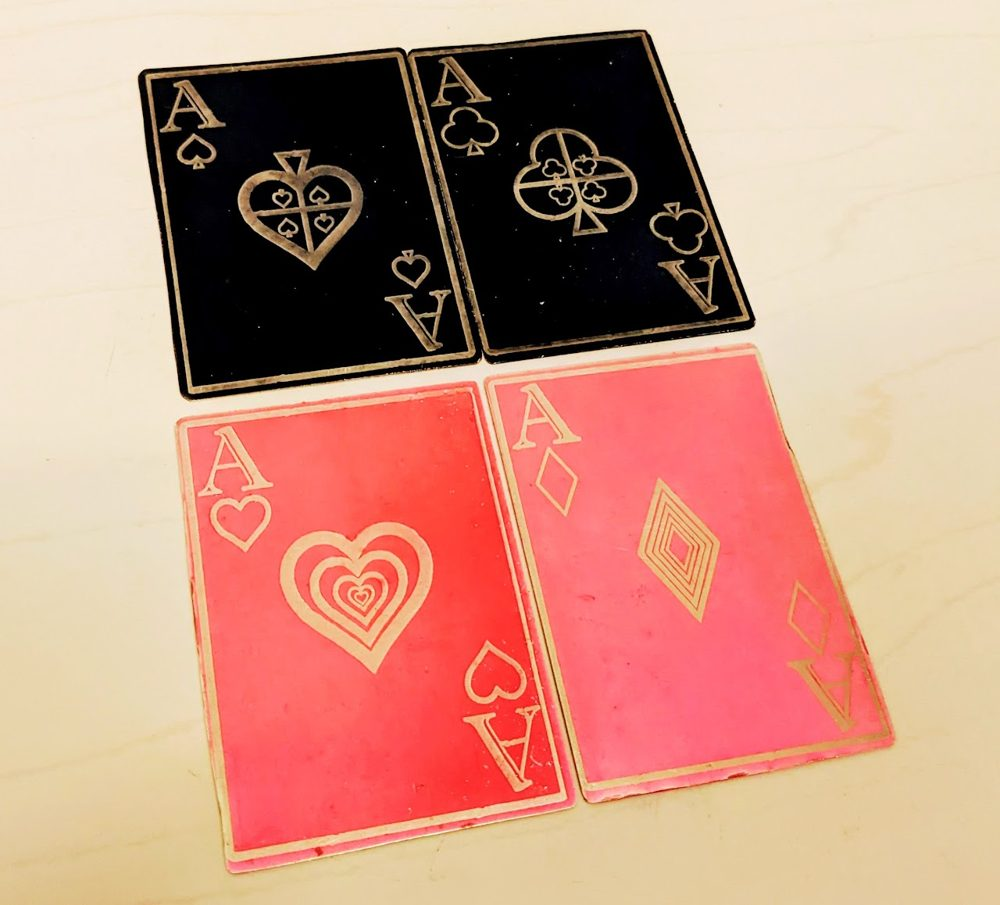
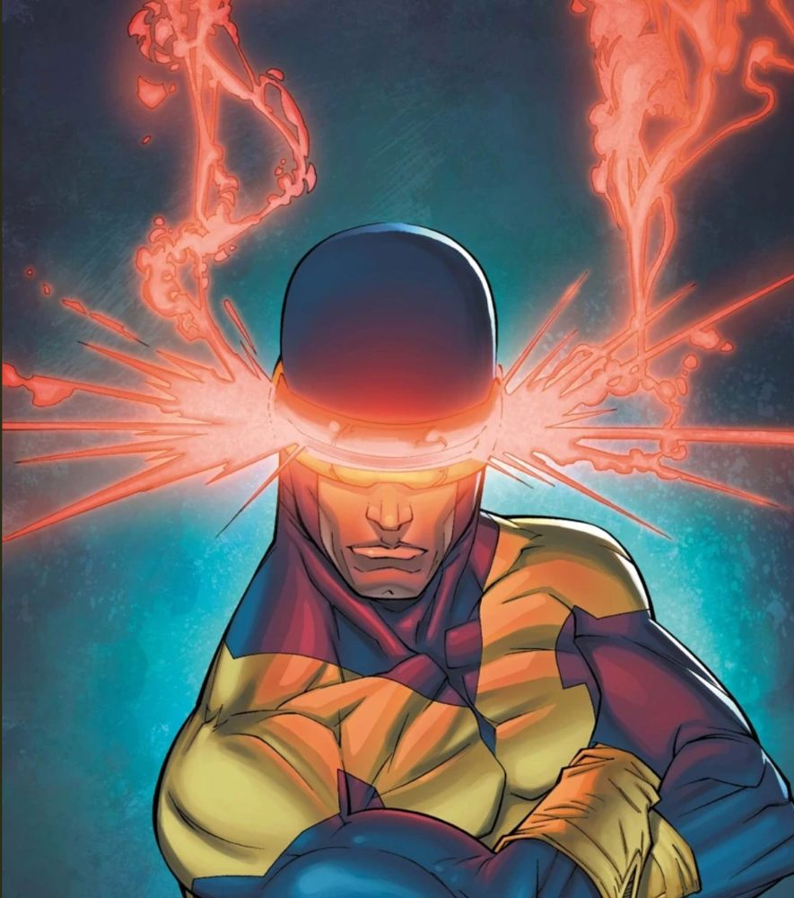

Lasers
Laser equipment and materials are labeled RED.
Everybody: Laser cutter access is separate from general BTU access and requires an orientation.
Students: Help with laser cutting for class assignments should come from your class LAs or TAs first, then the Lazor Wizards if available.
Faculty: Class assignments requiring laser cutting should be facilitated by LAs, TAs, or instructors.

Laser cutter orientations
The laser cutter orientation schedule is on the BTU calendar.
Anyone can gain access to the laser cutters using the process below. Until then, schedule a time to complete your laser cutting job with one of the Lazor Wizards.
Equipment and materials
- 75 watt CO2 laser, 30" x 18" bed (762mm x 457mm)
- 75 watt CO2 laser, 40" x 28" bed (1016mm x 711mm)
- Various plywood
- Various plastics
- Various cardboard and papers
- Various fabrics
Getting full independent access
- Complete the laser cutter orientation (see the calendar).
- As long as you need assistance, schedule laser appointments with a Lazor Wizard. They provide guided access and will help you as much or as little as needed.
- When you demonstrate independent and proper use of the laser cutter, you will have full access.
- Block 1-hour times on the whiteboard next to each laser (not during scheduled orientations).

Lazor Wizards
Email all of the Lazor Wizards at once. The subject line must say "Lazor Wizards".
geba2669@colorado.edu
zaja9653@colorado.edu
xin.wen@colorado.edu
sena.ucuk@colorado.edu
ellyse.jensen@colorado.edu
The current wizards are also listed on the Mischief Makers page.